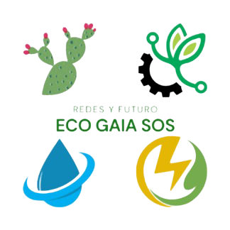

EcoGaiaSOS — Plataforma de impacto ambiental
2024 – Presente · CDMX
- Desarrollo e implementación de la plataforma web para gestión y difusión de convocatorias y proyectos ambientales.
- Responsable de la organización de datos, visualización y soporte a actores locales.
Sistema IoT para techos verdes — Proyecto de tesis
2023 – 2025 · Validado en campo
- Diseño y despliegue de sistema de monitoreo térmico autónomo con ESP32, sensores y alimentación solar.
- Desarrollo de pipeline de datos y dashboard para la validación de reducción térmica en techos verdes.
Enlaces del Proyecto Techo Verde
Experiencia Laboral
Robodacta — Diseño y ventas
2022 – 2024
- Diseño de kits educativos, empaques, cursos online y material audiovisual; gestión de proveedores y ventas.
METAMORFOZIZ — Publicidad y producción
2021 – 2022
- Diseño gráfico, producción de lonas y banners, gestión de materiales y procesos de impresión.
Ventas (local) — Coyoacán
2021 – 2022
- Atención directa a clientes, gestión de ventas B2C y B2B, manejo de caja y control de inventario.
Servicio técnico (negocio propio)
2018 – 2020
- Reparación de dispositivos electrónicos, compra y venta de refacciones, control de inventario y atención al cliente.
Logros
- Prototipo IoT validado en campo para monitoreo térmico y energético (Tesis).
- Participación técnica en el Congreso Nacional de Biotecnología (Oaxaca, 2025).
- Implementación y desarrollo de la plataforma Eco Gaia SOS.
Cursos y certificados
- Seminario: Diseño de la automatización de la manufactura e integración de dispositivos programables.
- Curso/autoformación: Python para análisis de datos (pandas) — proyectos prácticos.
- Certificación en proceso: Inglés B2.